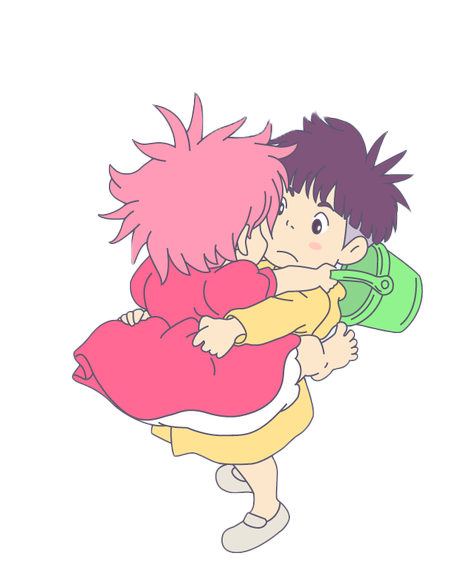

미야자키 하야오와
지브리를 읽다
STUDIO GHIBLI
STUDIO GHIBLI
늙음이 젊음의 은빛 등대가
될 수 있다는 걸 알게 해준
하울의 움직이는 성
하울의 움직이는 성
늙어서 불편한 것보다 좋은 점을 말하는 소피
무의미한 전쟁 도구로 활용되던 하울, 가족을 만나다
성장, 환경을 테마로 한
거장의 희망 교향악
벼랑위의 포뇨
포뇨가 소스케와 맺어지기 위해서는
에리얼보다 훨씬 높은 장벽을 넘어야 합니다.
두 아이의 순수한 사랑이라는 은유를 이용해,
인간과 자연이 공존할 수 있는 희망을 보여주고 있습니다.
